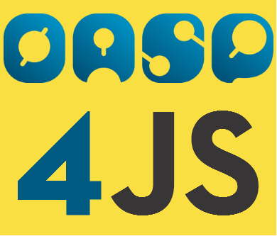
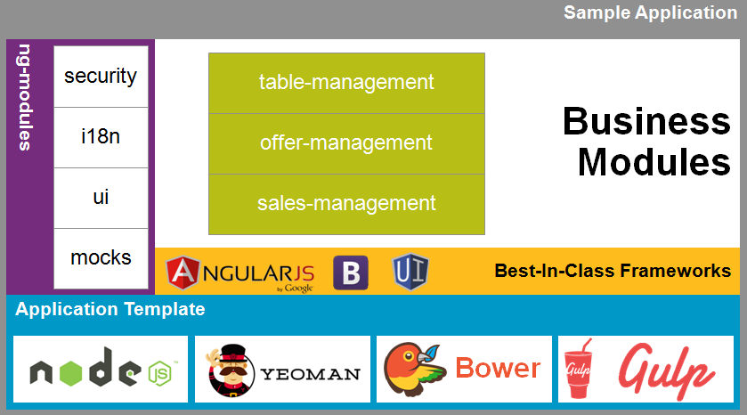
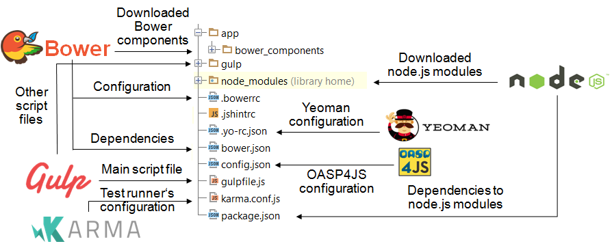

IDE
and
Tools
Bartłomiej Pietrowski, Marek Matczak
Meet
the
competitors


 Atom
Atom
- Home page https://atom.io/
- Package manager
- Collection of packages
- Well documented
- GIT support
- Markdown support
- Execute command by typing
- Theming, Open Source
 Visual Studio Code
Visual Studio Code
- Home page https://code.visualstudio.com/
- IntelliSense
- Extensions
- Powerful debugging
- GIT support
- Focused on Node and .NET
- Execute command by typing
- Theming, Open Source
Brackets
- Home page http://brackets.io/
- Live preview
- Focussed on front-end web development
- Inline editor
- Photoshop integration
- Extension manager (slow)
- Theming, Open Source
We make use of the  Application Template
- JavaScript Runtime Environment
- Based on the Google's V8 engine
- Includes npm (package manager)
Node Version Manager
for Windows

is a task-based streaming build system.
Bower
manages application dependencies.
enables creation of generators which automate common activities.

is a test runner supporting Jasmine, Mocha and QUnit test frameworks.
How it works
Git
... distributed version control
... everyone gets his own local repository
... simple branching and merging
... allows some interesting workflows
Basic Git Terminology
| Add | select what to commit |
| Commit | commits to your local repository |
| Push | pushes your local commits to a remote repository |
| Fetch | fetches changes from a remote repository |
| Pull | performs fetch, followed by merge (use this) |
| Merge | merges fetched changes into your current checkout |
Tools
Tortoise
GitKraken
SourceTree